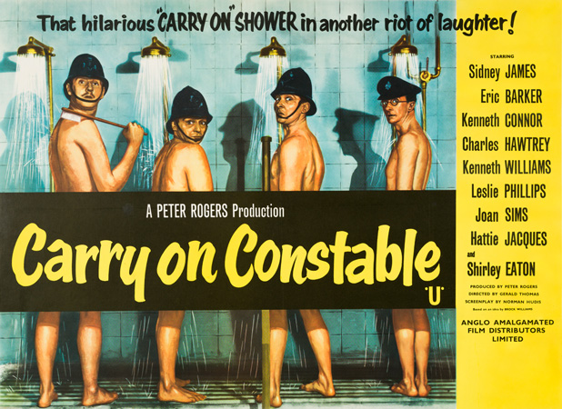

Peter Rogers
Dorinda Stevens
A suburban police station is understaffed due to a flu epidemic, and Sergeant Wilkins, under pressure to maintain staffing levels, is pleased to hear that three new recruits, straight from training school, are due shortly.
Before even arriving, the three policemen inadvertently assist some bank robbers into their getaway car, and are embarrassed when they learn the truth. The new constables are self-proclaimed intellectual and amateur psychologist PC Timothy Benson, former socially well-connected playboy and cad PC Tom Potter, and extremely superstitious PC Charles Constable. The arrival of WPC Gloria Passworthy, with whom Constable falls in love, and Special Constable Gorse completes the roster.
Out on the beat, the new constables try hard, but are less than successful. Benson nearly arrests a plainclothes detective, and Constable believes he is just heard a murder being committed, but it turns out to be a radio play. Potter investigates a report of an intruder, but finds a young woman in the bath and engages in a civil conversation with her about her recently broken relationship. Gorse, tasked to patrol with a police dog, is unable to control it. They have better luck when a wages robbery takes place. Benson and Potter locate the getaway car, and all four engage in a confrontation with the thieves, arresting them and recovering the money.
Commended for his efficiency and excellent results, Inspector Mills is promoted to a training position and Wilkins is promoted to replace him. Charlie Constable gets his girl (with a little help from Sergeant Moon) and stops being superstitious.
Filming dates: 9 November-18 December 1959.
Interiors: Pinewood Studios, Buckinghamshire.
Exteriors: The streets of Ealing, London The exterior of the police station is Hanwell Library, Cherrington Road, W7. Other scenes were filmed along the parade of shops on The Avenue in West Ealing, W13, with the Drayton Court Hotel visible in many scenes. The Royal Mail Sorting Office in Manor Road and the railway footbridge over the GWR out of West Ealing is also seen as still standing today. Other scenes were filmed on and around St Mary's Road (including St Mary's Church) and the surrounding streets, Ealing W5. The store used was F.H. Rowse department store. The building was demolished in the early 1980s and was situated on the junction of Green Man Lane and Uxbridge Road in Ealing.
Initially, the role of Sergeant Wilkins was intended for Ted Ray following his work on the previous film Carry On Teacher. However, Ray was contracted to ABC (despite being unused by them), who distributed the Carry On films to cinemas. Unhappy seeing one of their contracted actors in a rival production, they threatened to stop distribution, so Peter Rogers reluctantly dropped him from the films and replaced him with Sid James, thus beginning James's 19-film long membership of the Carry On team.
The film is also notable for the first appearance of nudity in the series (the shower scene). Also, a rare improvised line makes the final cut in the film. This appears when Charles Hawtrey gets out of bed and steps in his chamber pot, it starts rolling around on the floor and he tells it to be quiet. The film marks Leslie Phillips last appearance in a Carry On for 32 years. he wouldn't resurface until 1992's Carry On Columbus.
At-A-Glance Film Review - "the film is pure slapstick, with the misfit cops falling into things and out of things and either chasing or being chased by various animals and irate husbands. There are a few good laughs scattered throughout, but on the whole it's one of the weaker episodes of the series."